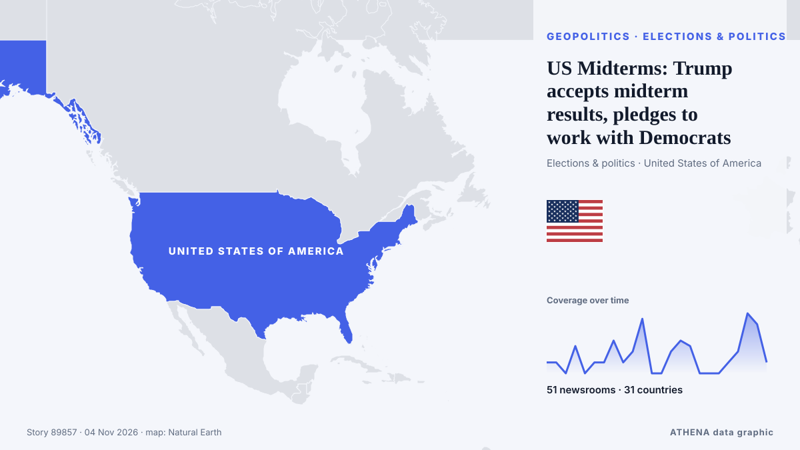

ATHENA Glaux Intelligences — Παγκόσμια ειδησεογραφική ανάλυση — κάθε αριθμός εξηγημένος
Οι ειδήσεις του κόσμου, διασταυρωμένες ανάμεσα σε χώρες
Το ATHENA Glaux παρακολουθεί εκατοντάδες ειδησεογραφικά μέσα σε όλο τον κόσμο και ομαδοποιεί τις αναφορές τους σε γεγονότα. Για κάθε γεγονός βλέπετε πόσα μέσα σε πόσες χώρες το ανέφεραν, ποιος ήταν πρώτος και έναν βαθμό κινδύνου με τους λόγους του — με ενημέρωση κάθε 10 λεπτά, σε επτά γλώσσες.
Ζωντανά από τις ειδήσειςUS Midterms: Trump accepts midterm results, pledges to work with Democrats51 μέσα · 31 χώρες · Κίνδυνος 2.4 · Πηγές: Al Jazeera English, The Straits Times

ΓεωπολιτικήUS Midterms: Trump accepts midterm results, pledges to work with Democrats
Democrats remain ahead in national polls as Trump and candidates make their final push in the days before polling day. από Al Jazeera English
Οι τίτλοι των ειδήσεων παρουσιάζονται στα αγγλικά, όπως δημοσιεύτηκαν.
Campaigns end ahead of South Africa’s local elections
Special voting gets underway on Monday and will continue on Tuesday. από SABC News

Η σημερινή εικόνα
| 06:00 | 718 |
|---|---|
| 07:00 | 437 |
| 08:00 | 1847 |
| 09:00 | 557 |
| 10:00 | 928 |
| 11:00 | 930 |
| 12:00 | 714 |
| 13:00 | 1000 |
| 14:00 | 855 |
| 15:00 | 902 |
| 16:00 | 885 |
| 17:00 | 739 |
| 18:00 | 443 |
| 19:00 | 548 |
| 20:00 | 529 |
| 21:00 | 376 |
| 22:00 | 389 |
| 23:00 | 620 |
| 00:00 | 406 |
| 01:00 | 396 |
| 02:00 | 404 |
| 03:00 | 361 |
| 04:00 | 487 |
| 05:00 | 346 |
Κίνδυνος των σημερινών γεγονότων
US delivery of 500 Patriot missiles to Ukraine will span 3 years starting in 2030
NATO Supreme Allied Commander Europe General Alexus Grynkewich said the United States continues to supply Ukraine with Patriot interceptor missiles, as well as weapons packages paid for by European… από Ukrinform (English)
First polls close in closely watched U.S. midterm elections
The US midterm elections next month could change the course of American politics at home and – and American policy abroad. από The National
Με την ευρύτερη κάλυψη
Αναδυόμενα σήματα
- Απότομη αύξηση · Ενεργό τώραJesus de Miguel
- Απότομη αύξηση · Ενεργό τώραInternational Court of Justice
- Απότομη αύξηση · Ενεργό τώραCongressional District
- Απότομη αύξηση · Ενεργό τώραMount Everest
- Απότομη αύξηση · Ενεργό τώραNorth Carolina
Επίσημες προειδοποιήσεις
- Red notification for tropical cyclone FOUR-26. Population affected by Category 1 (120 km/h) wind speeds or higher is 1.156 million .Red · GDACS ·
- Cyber chief: UK facing AI-powered attacks on critical infrastructure within two yearsadvisory · UK National Cyber Security Centre ·
- M 6.0 - 165 km NW of Port-Olry, VanuatuM6.0 · USGS ·
- M 6.2 - 43 km ESE of Port-Olry, VanuatuM6.2 · USGS ·
Το ATHENA στο Telegram
Μπείτε δωρεάν στην ομάδα ATHENA Glaux και λάβετε τις ειδήσεις τη στιγμή που δημοσιεύονται εδώ:
- έκτακτα γεγονότα με κίνδυνο 6 ή περισσότερο
- ωριαία σύνοψη των κορυφαίων γεγονότων
- ενημερώσεις των παρακολουθήσεων κινδύνου (Ορμούζ, Ερυθρά Θάλασσα, Ταϊβάν, κυρώσεις κ.ά.)
- την ημερήσια ενημέρωση κάθε πρωί στις 10:00 (ώρα Ελλάδας)
- εβδομαδιαία προοπτική
- επίσημες προειδοποιήσεις, αναδυόμενα σήματα και κινδύνους σε άνοδο
Πατήστε το κουμπί, ανοίγει το Telegram, πατήστε «Join». Οι αναρτήσεις είναι στα αγγλικά· μπορείτε να τη σιγάσετε ή να αποχωρήσετε όποτε θέλετε. Δεν έχετε Telegram; Είναι δωρεάν στο telegram.org.
Παρακολούθηση κινδύνων
Περισσότερα ›Παγκόσμιοι κίνδυνοι — εβδομάδα 45, 2026 (2–8 Νοε) ›
Γεωπολιτική, Πολιτική & Ασφάλεια
Περισσότερα ›US midterms: Democrat Annie Andrews wins US Senate seat in South Carolina upset over Darline Graham
Andrews, a paediatrician, is the first Democrat to win a Senate seat in South Carolina in 28 years. από The Straits Times
- Πόλεμοι & συγκρούσεις
Flash: Democrats projected to flip control of U.S. Senate -- media
- Εκλογές & πολιτική
Keisha Lance Bottoms wins Georgia race, becomes first Black woman elected governor of US state
- Διπλωματία & σύνοδοι
Kremlin confirms trilateral talks on Ukraine set for Nov 10-11 in Abu Dhabi
- Εκλογές & πολιτική
Democrat Jon Ossoff wins reelection to US Senate in Georgia
Οικονομία, Χρηματοοικονομικά & Αγορές
Περισσότερα ›North Korea warns of stronger response to US ‘hostility’
The powerful sister of North Korea's leader is warning the United States that it will mount a stronger response to Washington's "invariable hostile policy" toward Pyongyang, the state news agency… από NDTV
- Μετοχές, ομόλογα & αγορές
Pierce Brosnan Endorses Callum Turner As Next James Bond As “He’s So Strong”; Josh O’Connor Reacts To Talk Around 007 Casting
- Κρυπτονομίσματα & ψηφιακά στοιχεία
Crypto Today: Bitcoin, Ethereum, XRP under pressure as investors pull capital
- Μετοχές, ομόλογα & αγορές
NNPC eyes 10% equity sale, London, New York listings
- Μετοχές, ομόλογα & αγορές
Meta raises $15 billion in five-part US bond sale to fund AI expansion
Εμπόριο, Βιομηχανία & Υποδομές
Περισσότερα ›Two Ryanair flights from Dublin searched after potential bomb threats
Ryanair appears to be the worst-affected airline as at least 10 similar incidents were reported across Europe. από Evening Standard (London)
- Αερομεταφορές, σιδηρόδρομος & οδικές
Hoax bomb threats disrupt flights in Europe
- Αερομεταφορές, σιδηρόδρομος & οδικές
Kazakhstan to Produce 494 Medicines Under $ 862 Million Investment Plan
- Εμπόριο & εμπορικές συμφωνίες
Trump says US close to trade deal with Canada, Carney says work remains
- Ναυτιλία & λιμάνια
DP World strengthens China–Africa corridor with new shipping link
Ενέργεια, Πόροι & Περιβάλλον
Περισσότερα ›METLEN Signs Five-Year US LNG Supply Deal With Shell
Greek energy group METLEN has signed a binding five-year agreement with Shell Global LNG for six liquefied natural gas cargoes a year from 2027, turning an earlier memorandum into a firm supply… από Greek Reporter
- Ρύπανση & βιοποικιλότητα
Mother and daughter dead in suspected grizzly bear attack near Bella Coola
- Πετρέλαιο & φυσικό αέριο
New Jersey governor warns port operators against importing Russian diesel
- Κλίμα & κλιματική πολιτική
CMA CGM, Nike and Gemadept officially launch electric barge in Vietnam
- Πετρέλαιο & φυσικό αέριο
Shell to sell NWS LNG stake to XRG
Τεχνολογία, ΤΝ & Κυβερνοασφάλεια
Περισσότερα ›Google AI chatbot may break press copyright rules: EU legal adviser
Google’s AI chatbot Gemini may infringe press copyright rules by reusing published content to generate answers, as highlighted by an EU legal adviser in a landmark case involving Hungarian publisher… από IOL
- Τεχνητή νοημοσύνη
Anthropic Reports $17 Billion Quarterly Revenue Ahead of IPO
- Κυβερνοασφάλεια
Supermarket freezers in several European countries hit by apparent cyberattacks
- Κυβερνοασφάλεια
Europe on alert after supermarket freezers hit by cyber-attacks in 10 countries
- Επεξεργαστές & υπολογιστική
AMD smashes Q3 consensus on 97% data center growth
Επιχειρήσεις, Εταιρείες & Επενδύσεις
Περισσότερα ›Canva layoffs: design giant to cut or relocate more than 1,200 jobs in major restructure
Chief executive Melanie Perkins describes job cuts as ‘without doubt the hardest moment in our thirteen-year history’ in email to staff Get our breaking news email, free app or daily news podcast… από The Guardian
- Κλάδοι & εταιρικοί κίνδυνοι
Major automakers urge US Congress to pass permanent ban on Chinese vehicles
- Πτωχεύσεις & αναδιαρθρώσεις
Artists stage flash mobs at scenic spots in Dunhuang, NW China's Gansu
- Συγχωνεύσεις & εξαγορές
StormGeo acquires Portchain to accelerate Just-in-Time voyage optimisation at scale
- Νεοφυείς & καινοτομία
Von der Leyen: Hormuz closure cost Europe €127 billion
Υγεία, Επιστήμη & Έρευνα
Περισσότερα ›Ethiopia attacks kill civilians as health system nears collapse, WHO chief says
The World Health Organization reports that attacks in northern Ethiopia are pushing the region's fragile health system closer to collapse. από ABC News (International)
- Επιστημονικά επιτεύγματα
South Carolina elects Democratic senator for first time in almost three decades
- Συστήματα υγείας
Midterms: Abdul El-Sayed, Mike Rogers face off for Michigan Senate seat
- Επιστημονικές ανακαλύψεις
Evidence of red blood cells found in 115-million-year-old dinosaur’s bones
- Ιατρική έρευνα
Global cervical cancer cases, deaths forecast to rise by 2050: study
Κοινωνία, Δίκαιο & Δημόσια Πολιτική
Περισσότερα ›Spanish transport minister resigns days after deadly train crash
At least 69 people were killed and dozens injured in the collision south of the capital, Madrid. από BBC News
- Δυστυχήματα & έκτακτες ανάγκες
Footballer dies after on-field collision
- Δυστυχήματα & έκτακτες ανάγκες
Jesus de Miguel's tragic death: Wrong footballer faces racist abuse
- Δυστυχήματα & έκτακτες ανάγκες
Learjet Parts Found Miles from Florida Crash Site, NTSB Says
- Καταναλωτές & κοινωνία
‘Mogging’ named Collins Dictionary’s Word of Year for 2026
Αθλητισμός
Περισσότερα ›Photos: Champions League and Tenerife fans pay tribute to De Miguel
CD Tenerife forward Jesus de Miguel died after suffering cardiac arrest following an on-field collision. από Al Jazeera English
- Formula 1 & μηχανοκίνητα
Kansas Elects Its First Democratic Senator in 94 Years
- Ολυμπιακά & άλλα σπορ
NYC Marathon runner, 24, dies after collapsing 2 miles from finish
- Ολυμπιακά & άλλα σπορ
Canada to deny visas to Russian hockey players — PM Carney
- Ποδόσφαιρο
Bayern skeleton crew sink Atletico in Champions League
Πολιτισμός, Πρόσωπα & Τρόπος ζωής
Περισσότερα ›Aaron-Roy King, Pang Ron-Pei Jing fall in Hylo Open semi-finals
KUALA LUMPUR: Malaysia's impressive run of winning at least one title at each of the previous three stops of the European swing came to an end after Aaron Tai-Yap Roy King and Hoo Pang Ron-Lai Pei… από New Straits Times
- Κινηματογράφος & τηλεόραση
‘The Remarried Empress’ Gets Surprise Early Premiere On Disney+/Hulu
- Κινηματογράφος & τηλεόραση
‘India went through a dark phase’: Sachin Tendulkar opens up on captaincy stint
- Βασιλικοί οίκοι & πρόσωπα
King Charles calls slavery 'monstrous injustice' as PM mulls apology
- Μουσική
My Chemical Romance Leads ‘Parade’ of Reissues Marching Onto Billboard 200 Albums Chart